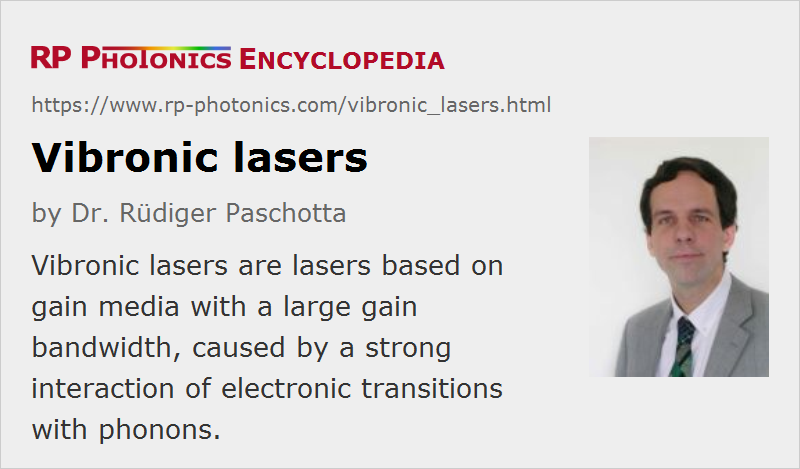

Vibronic Lasers
Definition: lasers based on gain media with a large gain bandwidth, caused by a strong interaction of electronic transitions with phonons
More general term: solid-state lasers
Categories: optical materials, lasers
How to cite the article; suggest additional literature
Author: Dr. Rüdiger Paschotta
In some laser gain media, particularly in those doped with transition metal ions, there is a strong interaction of the electronic states with lattice vibrations, i.e. with phonons. There can then be laser transitions where not only a photon is emitted, but also one or several phonons; also, optical transitions can involve the absorption of phonons. This vibrational–electronic (in short: vibronic) interaction leads to a strong homogeneous broadening of the transition and thus to a large gain bandwidth. In the early years of laser technology, vibronic lasers were sometimes called phonon-terminated lasers.
Most rare-earth-doped gain media are generally not vibronic. Nevertheless, phonons can play import roles in their laser processes. In particular, they lead to the fast thermalization within Stark level manifolds and two first non-radiative transitions between manifolds with a not too large energy spacing. In many cases, such first non-radiative transitions are essential for the mechanism of pumping and/or for depopulating the lower laser level.
Vibronic solid-state lasers, i.e. lasers based on vibronic solid-state gain media, allow for wavelength tuning over large ranges, and also the generation of ultrashort pulses. The most important types of vibronic lasers are
- titanium–sapphire lasers for wavelengths between 0.65 and 1.1 μm, also allowing the shortest pulse duration with passive mode locking
- Cr3+:LiSAF and Cr3+:LiCAF lasers, rivaling Ti:sapphire lasers, with a potential for diode pumping, although with a lower gain bandwidth
- Cr4+:YAG lasers, emitting around 1.35–1.65 μm
- alexandrite lasers (Cr3+:BeAl2O3) for 0.7–0.8 μm, an early type of tunable solid-state lasers
- chromium forsterite lasers (Cr4+:Mg2SiO4) for 1.17–1.34 μm, a wavelength region difficult to access with other lasers
- Cr2+:ZnSe and Cr2+:ZnS lasers for very broad emission in the mid-infrared region at 2–3.5 μm
- Tm3+:YAG emitting in the 2-μm region, exhibiting a particularly broad emission bandwidth compared with other rare-earth-doped gain media
The ruby laser operating at 694.3 nm is not a vibronic laser; it is operating on the (phonon-less) narrowband R1 line. This is contrast to most other transition-metal-based laser gain media.
The first vibronic laser was a Ni:MgF2 laser, demonstrated at Bell Labs in 1963 [1]. This could be operated only with cryogenic cooling and was therefore not very practical.
A relatively new vibronic gain medium is Fe2+:ZnSe for mid-infrared emission with 3.7–5.1 μm.
Note that some solid-state laser gain media such as alexandrite exhibit both vibronic and non-vibronic (“R line”) transitions. The latter have much lower optical bandwidths.
The term vibronic lasers is also used in the context of molecular gas lasers, if the laser transition occurs between vibrational levels of different electronic states. Such gas lasers are usually ultraviolet lasers.
Questions and Comments from Users
Here you can submit questions and comments. As far as they get accepted by the author, they will appear above this paragraph together with the author’s answer. The author will decide on acceptance based on certain criteria. Essentially, the issue must be of sufficiently broad interest.
Please do not enter personal data here; we would otherwise delete it soon. (See also our privacy declaration.) If you wish to receive personal feedback or consultancy from the author, please contact him e.g. via e-mail.
By submitting the information, you give your consent to the potential publication of your inputs on our website according to our rules. (If you later retract your consent, we will delete those inputs.) As your inputs are first reviewed by the author, they may be published with some delay.
Bibliography
| [1] | L. F. Johnson, R. E. Dietz and H. J. Guggenheim, “Optical maser oscillations from Ni2+ in MgF2 involving simultaneous emission of phonons”, Phys. Rev. Lett. 11 (7), 318 (1963), doi:10.1103/PhysRevLett.11.318 |
| [2] | D. E. McCumber, “Theory of phonon terminated optical masers”, Phys. Rev. 134 (2A), A299 (1964), doi:10.1103/PhysRev.134.A299 |
| [3] | A Budgor, “Overview of chromium doped tunable vibronic lasers”, Proc. SPIE 0461, New Lasers for Analytical & Industrial Chemistry, 62 (1984), doi:10.1117/12.941074 |
| [4] | J. Walling et al., “Tunable alexandrite lasers: Development and performance”, IEEE J. Quantum Electron. 21 (10), 1568 (1985), doi:10.1109/JQE.1985.1072544 |
| [5] | P. Schwendimann, “Model for laser action in vibronic systems”, Phys. Rev. A 37 (8), 3018 (1988), doi:10.1103/PhysRevA.37.3018 |
| [6] | A. Teppitaksak et al., “High efficiency >26 W diode end-pumped Alexandrite laser”, Opt. Express 22 (13), 16386 (2014), doi:10.1364/OE.22.016386 |
| [7] | I. T. Sorokina, “Crystalline mid-infrared lasers” (eds. I. Sorokina and K. L. Vodopyanov), in Solid-State Midinfrared Laser Sources, Springer, Berlin (2004) |
See also: transition-metal-doped gain media, chromium-doped gain media, titanium–sapphire lasers, phonons, gain bandwidth, gas lasers, mid-infrared laser sources
and other articles in the categories optical materials, lasers
|  |
If you like this page, please share the link with your friends and colleagues, e.g. via social media:
These sharing buttons are implemented in a privacy-friendly way!